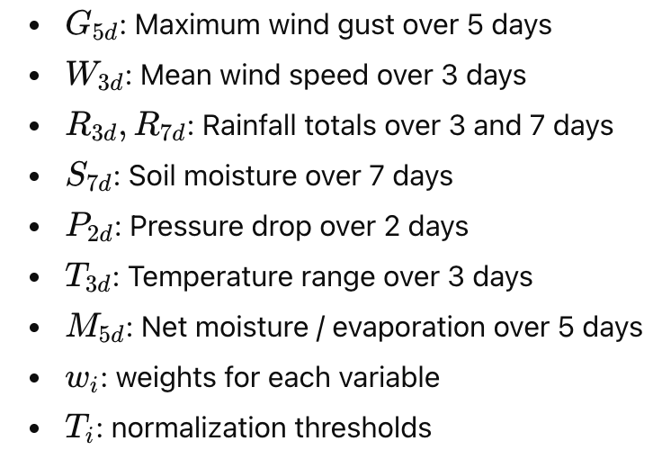
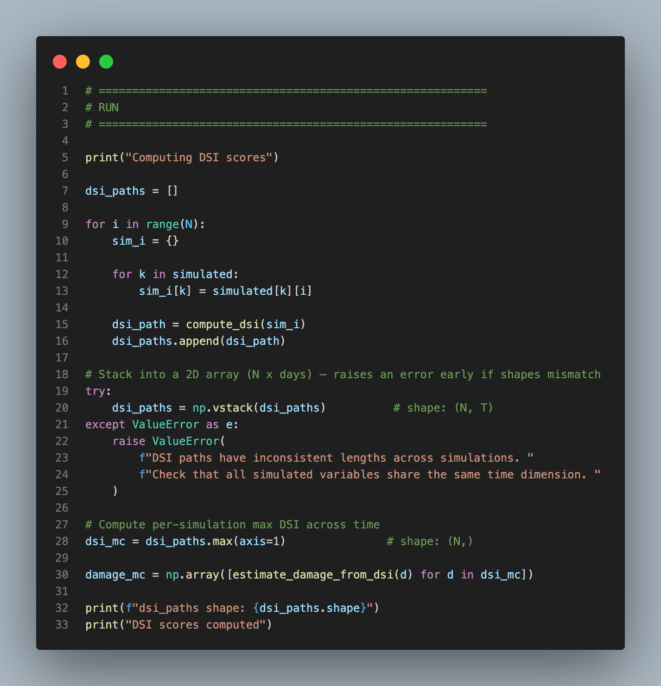
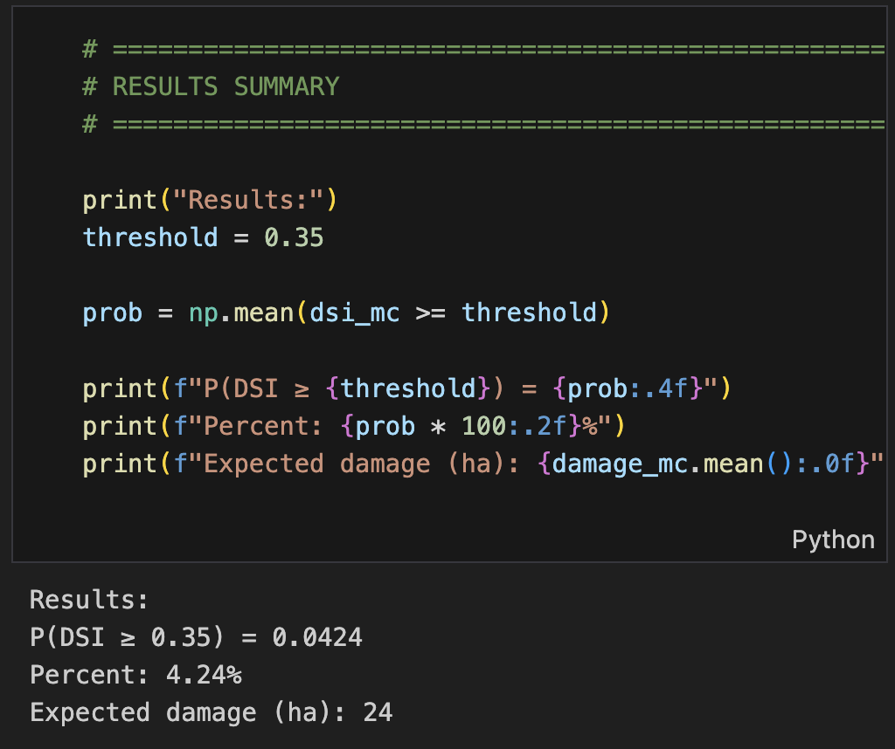
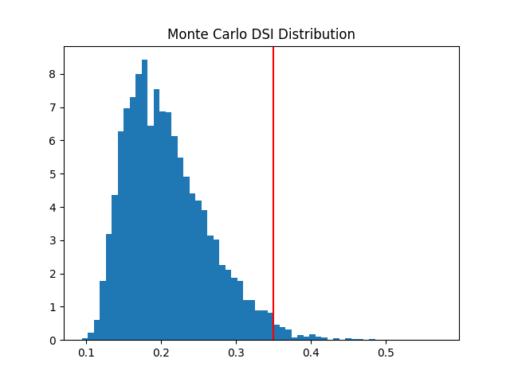

Create
Normalisation function


- x → the raw variable (e.g., wind speed, rainfall, surge height)
- limit → an extreme reference threshold
- power → controls curve shape (Obtained by backpropagation)
- Each variable has different units and magnitudes. They cannot be combined directly.
- So they must be normalized to a comparable 0-1 risk scale.
- x / limit - Scales the variable relative to its extreme threshold.
- Minimum/Maximum - caps the value to 1 or floors to 0
- power = 1.6, the curve becomes nonlinear. Storm damage is not linear.
Inputs:
Reason for this function:
Code:
Normalisation function Unit Testing

| # | x | limit | power | Expected | Actual | Notes | Result |
|---|---|---|---|---|---|---|---|
| 1 | 0 | 100 | 1.6 | 0.0 | 0.0 | x=0 → output is 0 | PASS |
| 2 | 100 | 100 | 1.6 | 1.0 | 1.0 | x at limit → z=1, clamped to 1.0 | PASS |
| 3 | -100,000 | 100 | 1.6 | 0.0 | 0.0 | np.maximum(0, x) floors negative input | PASS |
| 4 | 1,000,000 | 100 | 1.6 | 1.0 | 1.0 | np.minimum(1, z) clamps extreme input | PASS |
| 5 | 50 | 0 | 1.6 | 0 | ZeroDivisionError | No guard for limit=0 in function | ERROR |
| 6 | 50 | 100 | 0 | 1.0 | 1.0 | z^0 = 1 for any non-zero z | PASS |
| 7 | nan | 100 | 1.6 | 0 | nan | nan propagates silently, poisons DSI score | FAIL |
Testing
Black box testing
- I gave my program to my friend and explained what my system predicts
- My friend wanted to see if an increase in wind by 20% would cause an increase in the probaility of a storm
- The probability did increase and my friend was satifised
White box testing
- I purposely fed the model null and nan values to represent undefined, unrepresentable, or missing numerical data
- My system intially could not handle it
- I updated my code to set all these values to 0 or throw an error to the user Example:

System testing
- Tested the full pipeline from historical weather input → AR simulation → DSI calculation → forestry damage estimation.
- I confirmed that embedded system readings correctly modify the simulated wind and temperature values via the amplification factor.
- I verified that all visual outputs (graphs and probability results) correctly reflected the simulated data.
Autoregressive Predictive model
Generates correlated future weather paths instead of independent random draws.
- I used an autoregressive model for this project as it’s the best fit for weather
- Future weather value depends on
- its previous value
- long-term average
- random shock
- A Moving Average (MA) model would not suit weather forecasting because weather patterns rely heavily on physical momentum and seasonality (past values), whereas MA models ignore past values and rely purely on the "shocks" or errors of previous predictions.


mu = series.mean()
Gets the mean of the historical data: This is the “anchor” that the process drifts towards.
sigma = series.std(ddof=1)
Gets the sample standard deviation — measures typical variability. Higher std = higher chaos.
phi = np.clip( np.corrcoef( series[1:], series[:-1] )[0, 1], 0.3, 0.9 )
Computes correlation "how much todays value depends on yesterdays" Clip it to ensure a stable simulation (min 0.3, max 0.9)paths[i, t] = ( phi * paths[i, t-1] + (1 - phi) * mu + sigma * rng.normal() )
- This loops through each day and calculates its new value
- (1 - phi ) is the balance, it pulls value back toward historical average.
- Without this the process drifts and I would get unrealistic weather sequences
Incorporation of my embedded system readings + Problem I faced
- My Model needs: Multiple daily weather readings
- My embedded system measures 2 variables and I ran it for 1 hour
Problem I faced: how can I use my data and combine it with my models?
How I overcame it: I used the embedded data to estimate something it is good at measuring
- Short-term extremes and volatility ( liability to change )
- Not replacing historical data but instead: Multiplying by a calculated amplication factor derived from the embedded system


- Maximum recorded gust: represents the true peak wind intensity observed during the session
- Dividing it by the average sustained wind gives a physically meaningful measure of how much stronger extreme gusts were compared to typical wind conditions

- Mean of the max embedded temperature divided by the mean of the historical data
- Showing how much stronger temperature was compared to historical data
Monte Carlo simulation

- This function loops through 8000 simulations
- For each simulation a path for every variable is created using the simulate ar1 function
- Each simulation is one possible world of weather
- All simulation are stored in a dictionary
- Multiplying the simulated daily values of Wind and Max temp by the amplication factor (not the historical ones) before they go into the rolling calculations
- The floor zero is set to true for any variables that cant go below 0, e.g: Wind speed (cant be below 0kts)
DSI & Forestry damage computation



- This function computes a Damage score index
- Rolling averages and other weather readings are calculated
- Each variable is normalised
- DSI is then determined based on a weighted combination of these normalised variables

- This function computes forestry damage in hectares (ha) from the DSI score
- If the DSI doesnt reach a certain threshold damage (Below a DSI of approximately 0.35) for that simulation is considered to be 0 (trees have a tipping point) The threshold was generated on historical damage
- Damage is modeled exponentially. After surpassing the threshold, marginal increases in DSI lead to rapidly accelerating increases in forestry damage, because once environmental stress exceeds a critical tipping point, forest systems lose resilience and become increasingly vulnerable to compounding damage.

Results

- Probaility of a damaging storm happening

- Distribution of DSI in simulated worlds

- Forecast uncertainty increases as the prediction forecast extends. This is because, Randomness and model assumptions accumulate and amplify over time, leading to a wider range of possible outcomes.


- There is a positive correlation coefficient of r = 0.5742, Because Max gust is weighted most heavily